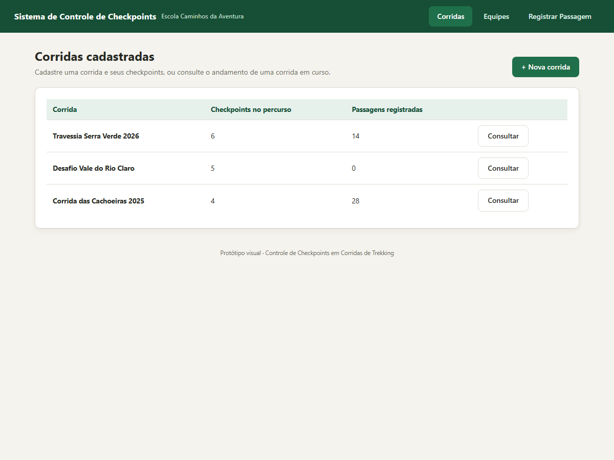
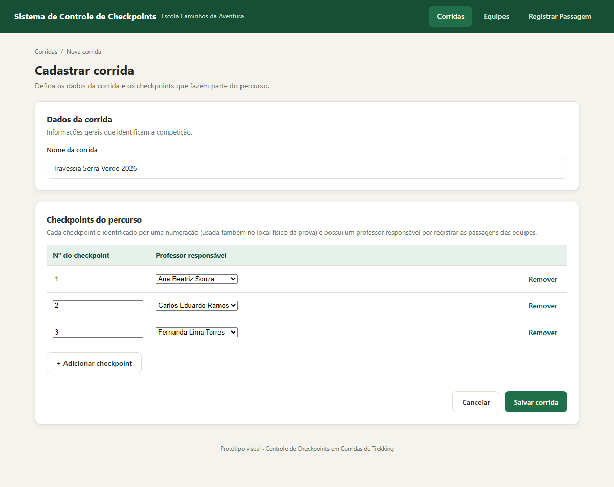
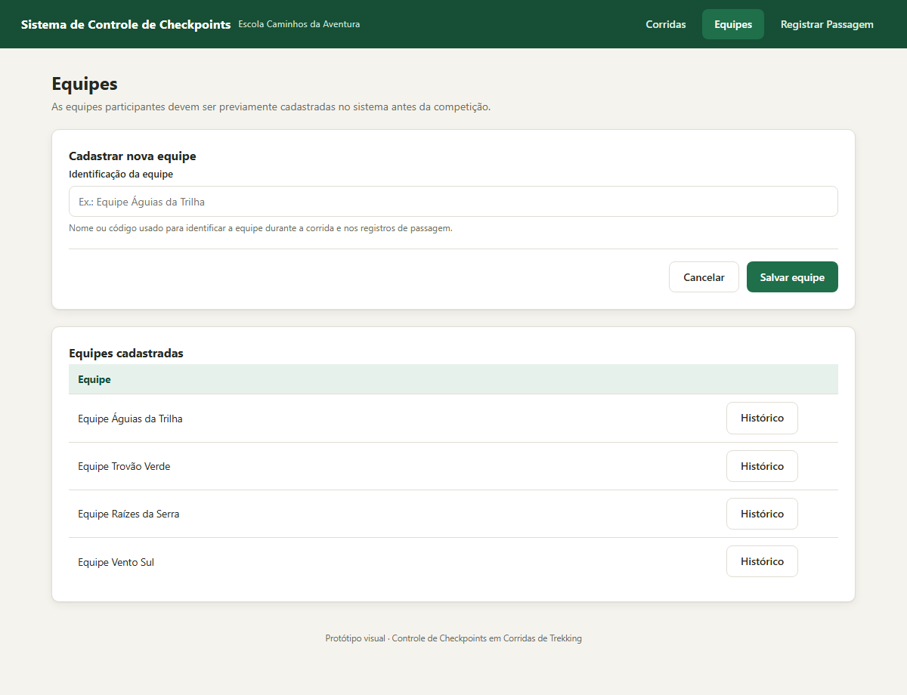
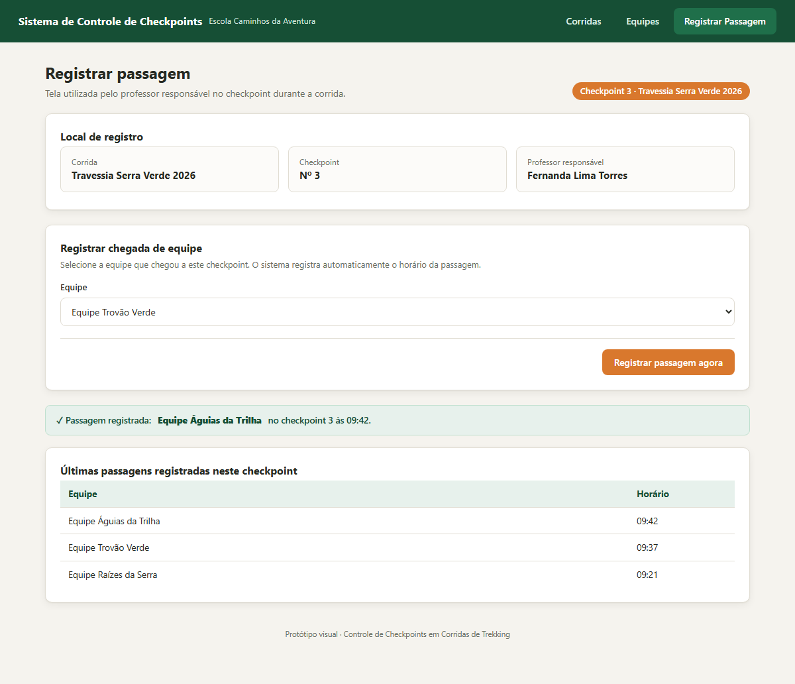
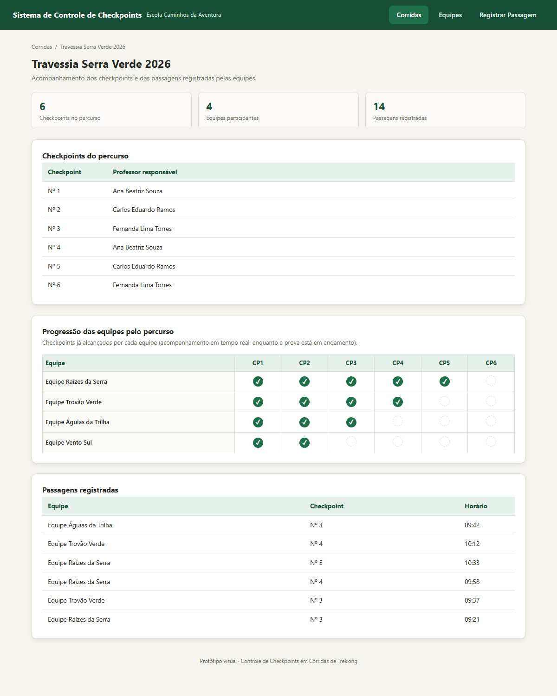
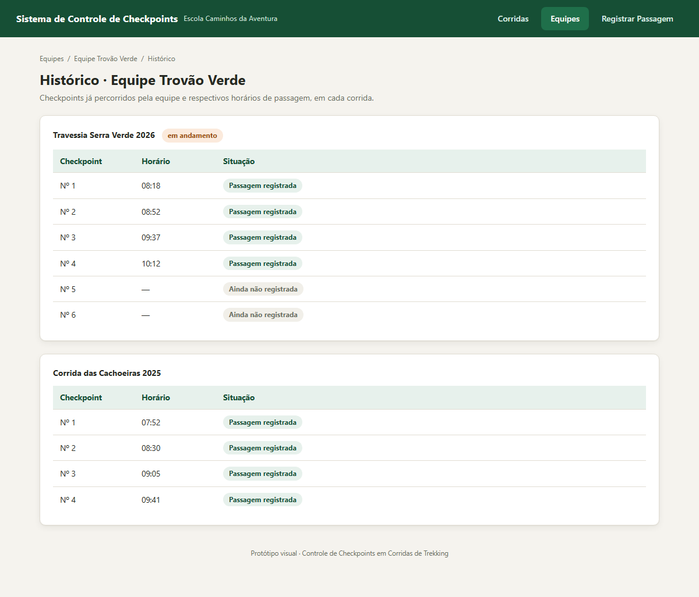

Atividade 1 — Análise, Modelagem e Prototipação do Sistema
A Escola Caminhos da Aventura pretende realizar competições de corrida de aventura no estilo trekking, nas quais equipes de competidores percorrem um trajeto definido, passando por diversos pontos de controle (checkpoints) espalhados ao longo do percurso. Por não possuir recursos para instalar totens eletrônicos de registro automático em todos os checkpoints, a escola decidiu adotar um sistema informatizado operado pelos professores responsáveis por cada ponto de controle, que registram manualmente a passagem de cada equipe.
Antes de uma competição, um responsável cadastra a corrida, define os checkpoints que compõem o percurso (cada um identificado por uma numeração e associado a um professor responsável) e cadastra previamente as equipes participantes. Durante a prova, ao chegar a um checkpoint, o professor responsável registra a passagem da equipe, informando a corrida, o checkpoint e a equipe — o sistema grava automaticamente o horário do registro. Como esses registros são feitos em tempo real, a organização pode acompanhar a progressão das equipes enquanto a prova acontece, verificando quais checkpoints já foram alcançados por cada equipe, além de consultar posteriormente o histórico de passagens de uma equipe específica.
O objetivo desta atividade não é implementar o sistema, mas compreender o problema descrito no estudo de caso e representar uma primeira especificação da solução por meio de quatro artefatos coerentes entre si: a tabela de requisitos, o diagrama de casos de uso, o diagrama entidade-relacionamento (DER) e o protótipo visual das principais telas, apresentados nas seções seguintes.
Os requisitos abaixo foram derivados diretamente da descrição do estudo de caso.
| Código | Requisito | Descrição |
|---|---|---|
| RF01 | Cadastrar corrida | O sistema deve permitir que um responsável cadastre uma corrida, informando seus dados e os checkpoints que compõem o percurso. |
| RF02 | Cadastrar checkpoint | O sistema deve permitir cadastrar os checkpoints de uma corrida, informando o número de identificação do checkpoint (usado também no local físico da prova) e o professor responsável por ele. |
| RF03 | Cadastrar equipe | O sistema deve permitir cadastrar previamente as equipes participantes, informando sua identificação. |
| RF04 | Registrar passagem de equipe em checkpoint | O sistema deve permitir que o professor responsável pelo checkpoint registre a passagem de uma equipe, informando a corrida, o checkpoint e a equipe, armazenando automaticamente o momento (data/hora) do registro. |
| RF05 | Consultar corrida | O sistema deve permitir consultar uma corrida, visualizando seus checkpoints e as passagens já registradas pelas equipes, com atualização em tempo real durante a prova. |
| RF06 | Consultar histórico de equipe | O sistema deve permitir consultar o histórico de uma equipe, identificando os checkpoints já percorridos por ela e os respectivos horários de passagem. |
| Código | Requisito | Descrição |
|---|---|---|
| RNF01 | Consistência dos registros | O sistema deve garantir que cada passagem registrada esteja corretamente associada à corrida, ao checkpoint e à equipe correspondentes, de modo que os registros de uma corrida não sejam confundidos com os de outra competição realizada pela escola. |
| RNF02 | Disponibilidade em tempo real | O sistema deve permitir a consulta das passagens registradas durante a realização da prova, possibilitando o acompanhamento em tempo real da progressão das equipes pelo percurso. |
O sistema é utilizado por dois perfis de usuário. O Responsável (organizador da corrida) cadastra as corridas, os checkpoints do percurso e as equipes participantes, além de consultar o andamento das corridas e o histórico das equipes. O Professor responsável por um checkpoint utiliza o sistema durante a prova para registrar a passagem das equipes por aquele ponto de controle.
O caso de uso UC01 — Cadastrar corrida inclui («include») o caso de uso
UC02 — Cadastrar checkpoint, pois os checkpoints do percurso são definidos como parte do
cadastro da corrida.
As entidades abaixo representam os dados que o sistema precisa armazenar, de acordo com o estudo de caso:
O protótipo foi desenvolvido em HTML e CSS (Opção B), representando as principais telas do sistema descrito nos requisitos e nos casos de uso. Nenhuma lógica de sistema foi implementada — as telas a seguir são capturas do protótipo navegável, com dados de exemplo ilustrativos.
Ponto de entrada do sistema: lista as corridas já cadastradas, permite iniciar o cadastro de uma nova corrida e acessar a consulta de uma corrida existente.

Formulário para registrar os dados da corrida e, na mesma tela, os checkpoints que fazem parte do percurso — cada um com seu número identificador e o professor responsável.

Cadastro prévio das equipes participantes, exibindo também a lista de equipes já registradas, com acesso ao histórico de cada uma.

Tela utilizada pelo professor responsável no checkpoint durante a corrida: o contexto (corrida, checkpoint e professor) já está definido, restando apenas selecionar a equipe que chegou para registrar sua passagem, com o horário gravado automaticamente.

Visão consolidada de uma corrida: checkpoints do percurso, progressão das equipes (quais checkpoints cada equipe já alcançou e quais ainda não) e a lista de passagens registradas, atualizada em tempo real.

Histórico de uma equipe específica, organizado por corrida, mostrando os checkpoints já percorridos e os respectivos horários de passagem.

A tabela a seguir demonstra a coerência entre os quatro artefatos produzidos, relacionando cada requisito funcional ao respectivo caso de uso, às entidades do DER envolvidas e à tela do protótipo correspondente.
| RF | Caso de uso | Entidades envolvidas | Tela do protótipo |
|---|---|---|---|
| RF01 | UC01 — Cadastrar corrida | Corrida, Checkpoint | Tela 2 — Cadastrar corrida |
| RF02 | UC02 — Cadastrar checkpoint | Checkpoint, Professor | Tela 2 — Cadastrar corrida |
| RF03 | UC03 — Cadastrar equipe | Equipe | Tela 3 — Cadastrar equipe |
| RF04 | UC04 — Registrar passagem de equipe em checkpoint | Passagem, Corrida, Checkpoint, Equipe | Tela 4 — Registrar passagem |
| RF05 | UC05 — Consultar corrida | Corrida, Checkpoint, Passagem | Tela 1 e Tela 5 |
| RF06 | UC06 — Consultar histórico de equipe | Equipe, Passagem | Tela 6 — Histórico da equipe |